'Di ko alam pero lab 'to
_3_files/anadawan.jpg)
Dinelete mo 'to sa phone ko at dahil mabait ako, ni-recover ko
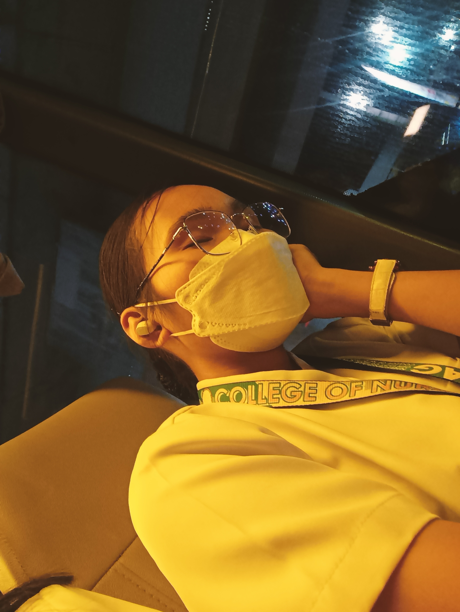Ito naman, dapat ipambabati ko dapat last birthday mo hehe (miss ko na kayo sa bus:()
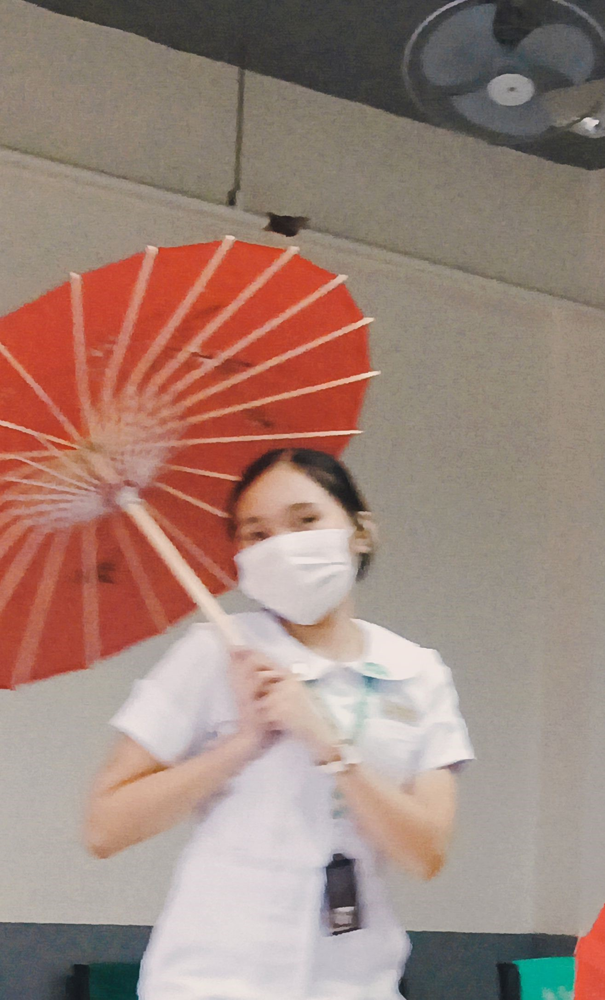Practice sa PE :)
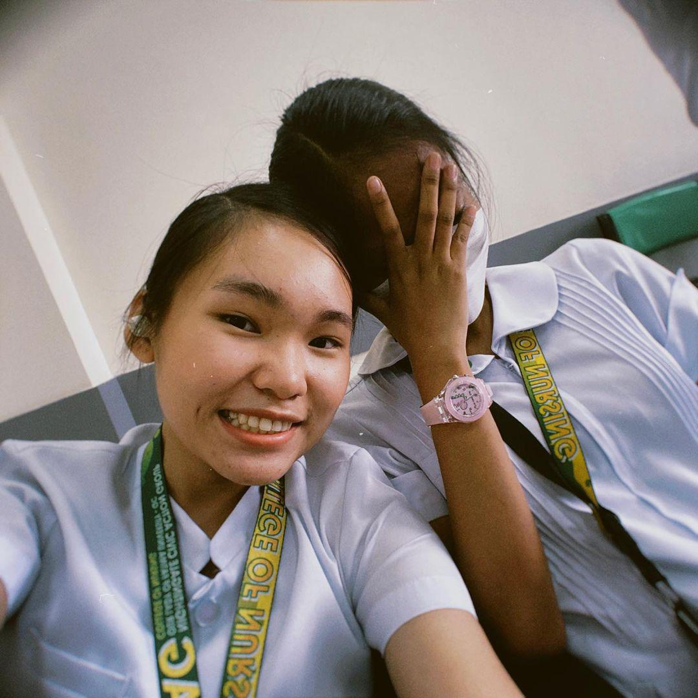I remember, ito yung inaasar mo ako
_3_files/coket.jpg)
'Di ko alam kung nakapag-thank you ako rito, pero thank you. Appreciated lahat ng binibigay mo sa akin<3 (Sorry about don sa tulip...)
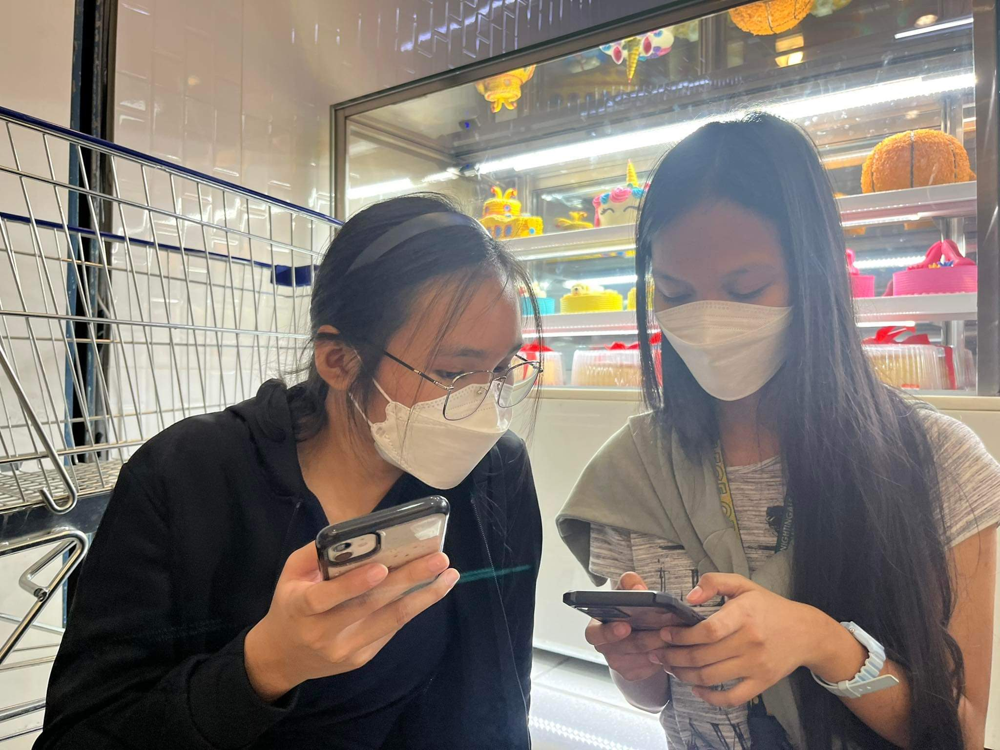I think yung nage-exchange tayo cellphone number sa labas ng SM Supermarket
Ewan ko kung bakit kita pinicturan dito ü§∑ü§∑
_3_files/dark.jpg)
Wala lang, cute nung lights e
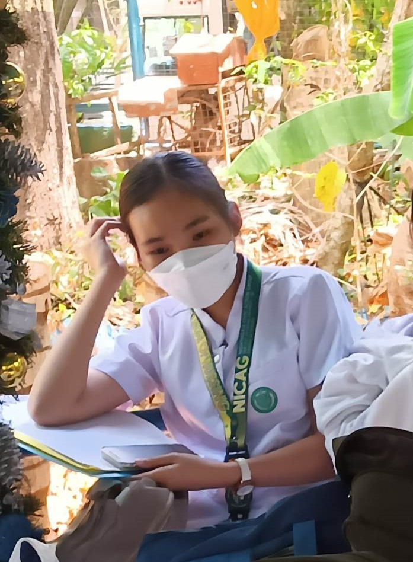Ito ang hilig mo, ang mag-senti sa centi HAHAHHAHAHHAAHA
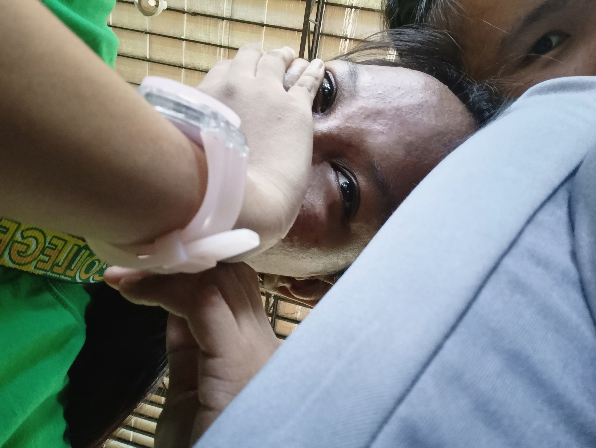PE, di ko alam ano nangyayari dito
_3_files/et.jpg)
Eating preshy
_3_files/jt2ou.jpg)
bus na nman :(((
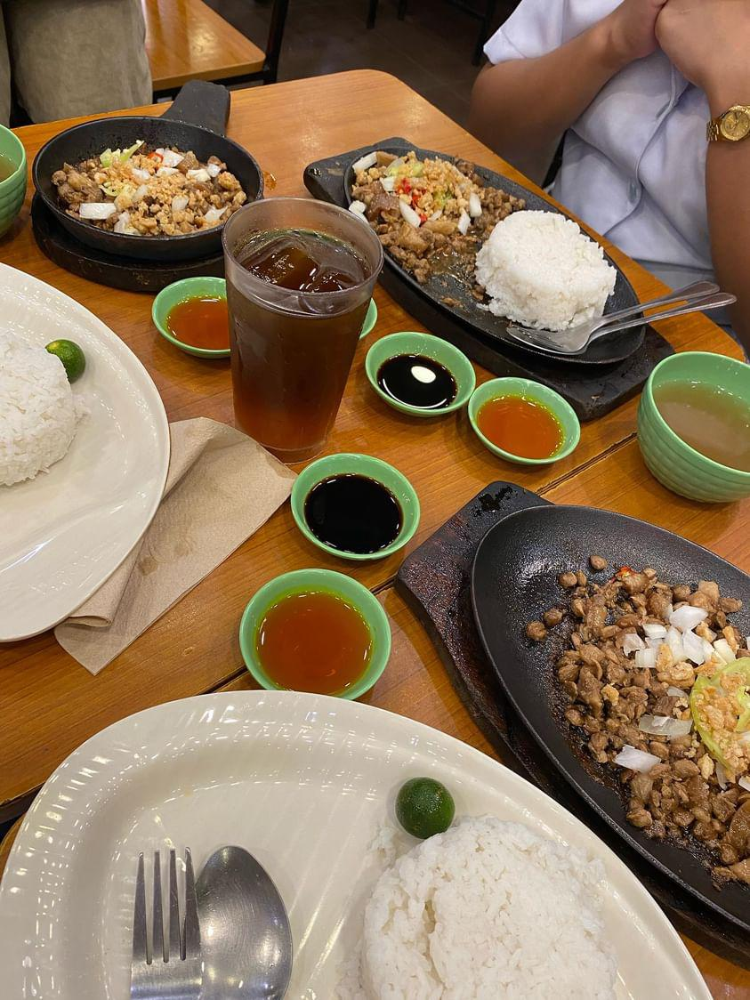Inasal kasi di napagbigyan sa popeyes niya HAHAHHAHAA
Isa pa 'tong miss q na, pares dayss
_3_files/slep2.jpg)
Si mahilig mag-sleep tsaka si mahilig mag-pic
_3_files/sorry.jpeg)
Pinutol ko si Ember dito kasi wala na akong makitang pic natin, DI KA KASI NAG-REREPLY üò£üò£
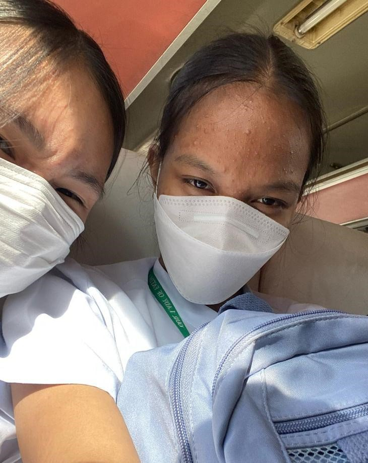I think ito na yung last na sakay natin sa busüòîüòî
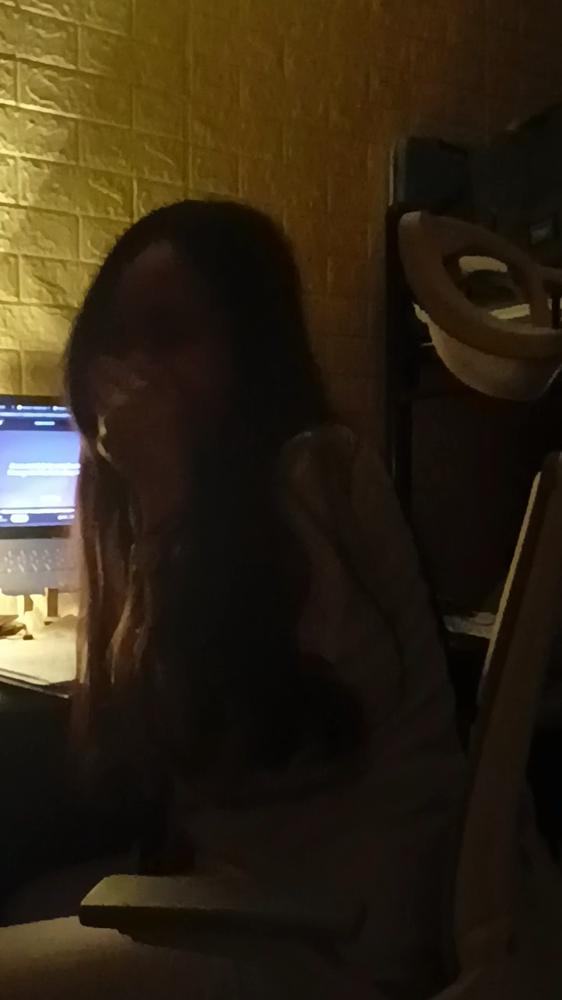Gulat talaga ako sa'yo nito, bigla ka ba namang nag-rap e
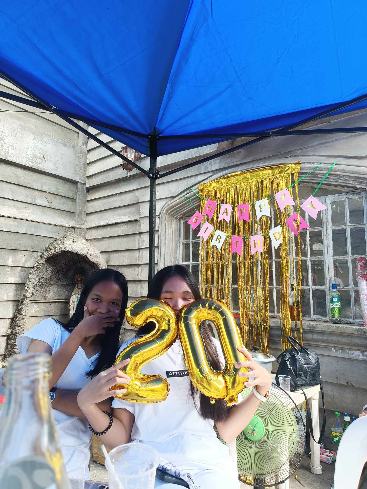Birthday ni abe hehe
_3_files/bus.jpg)
Not sure, pero ito ata first selfie pic natin...
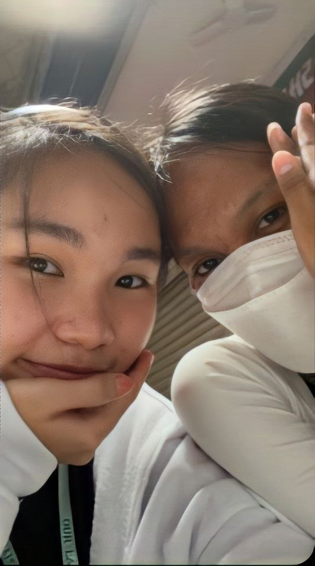Summer Enrollment
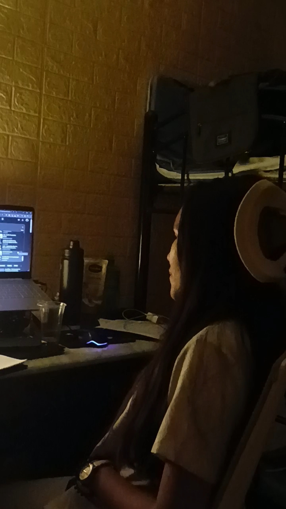Another rapper sa gallery q
_3_files/pg.jpg)
ang cute, mas malaki pa siya kesa don sa pinag-laruan niya
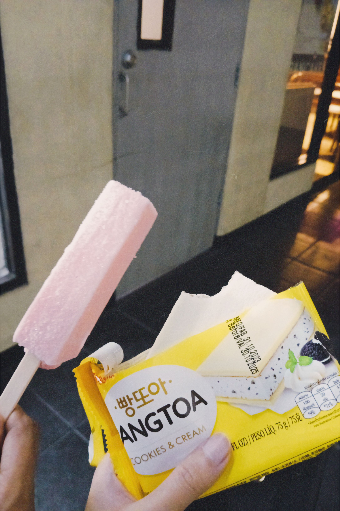Ice Cream na 'di kasama si ari-ya
_3_files/wq.jpeg)
Picture bago matulog